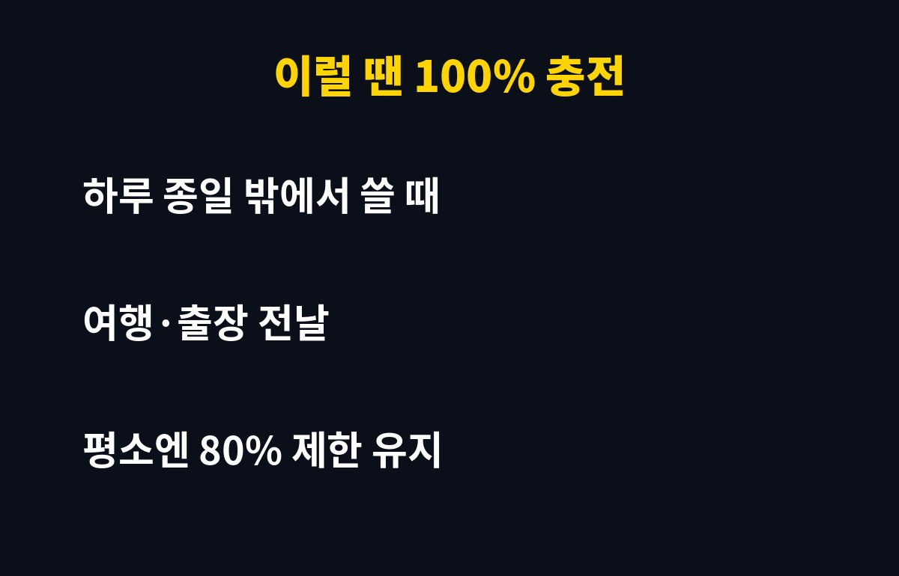

배터리 충전 80% 제한, 아직 안 켜셨다면 이 글을 끝까지 보세요. 매일 밤 100%까지 꽉 채워 충전하는 분이라면 배터리가 생각보다 빨리 늙고 있을 수 있어요. 왜 그런지, 어떻게 막는지 바로 알려드릴게요.
왜 100% 충전이 배터리에 안 좋을까요?
스마트폰 배터리는 대부분 리튬이온 방식이에요. 이 배터리는 가득 찬 상태로 오래 머물수록, 그리고 열이 날수록 빨리 닳는 성질이 있어요. 특히 잘 때 100%로 충전해 두고 몇 시간씩 그대로 두는 습관이 쌓이면, 같은 폰이라도 1~2년 뒤 배터리 성능 차이가 벌어지는 이유가 됩니다.
그래서 제조사들도 충전 상한선을 두는 기능을 기본으로 넣어 주고 있어요. 문제는 많은 분들이 이 기능이 있는지조차 모르고 쓴다는 거예요.
아이폰과 갤럭시는 어디서 설정하나요?
기종과 운영체제 버전에 따라 메뉴 이름이 조금 다를 수 있지만, 보통 아래 위치에서 찾을 수 있어요.
| 기기 | 설정 위치 | 기능 |
| 아이폰 | 설정 > 배터리 > 충전 | 충전 한도·최적화 충전 |
| 갤럭시 | 설정 > 배터리 > 배터리 보호 | 충전 상한 제한 |
| 기타 안드로이드 | 설정 > 배터리 > 충전 최적화 | 기종별 상이 |
메뉴가 안 보이면 폰 소프트웨어 업데이트부터 해 보세요. 최신 버전에서 생기는 경우가 많아요.
80%만 충전하면 불편하지 않을까요?
평소 집이나 사무실에서 충전기를 자주 꽂을 수 있다면 거의 체감이 없어요. 대신 하루 종일 밖에서 써야 하는 날, 여행이나 출장 전날은 잠깐 제한을 풀고 100%로 채우면 됩니다.
즉 "평소엔 제한 켜기, 필요한 날만 풀기"가 가장 현실적인 방법이에요. 이렇게만 해도 배터리를 아끼면서 불편은 최소로 줄일 수 있어요.
충전할 때 같이 지키면 좋은 습관은요?
첫째, 충전하면서 게임이나 영상을 오래 보지 마세요. 열이 가장 큰 적이에요. 둘째, 두꺼운 케이스를 낀 채 무선충전을 하면 열이 더 잘 차니 가끔 벗겨 주세요. 셋째, 너무 싼 비인증 충전기는 피하세요.

배터리 교체 비용을 생각하면 3초 설정이 훨씬 싸게 먹혀요. 지금 폰 꺼내서 바로 확인해 보세요.
이런 IT 꿀팁이 도움이 되셨다면 구독해 두시고 다음 글도 챙겨 가세요.
기사·공식 발표 기준이며 출시·가격 정보는 바뀔 수 있어요.